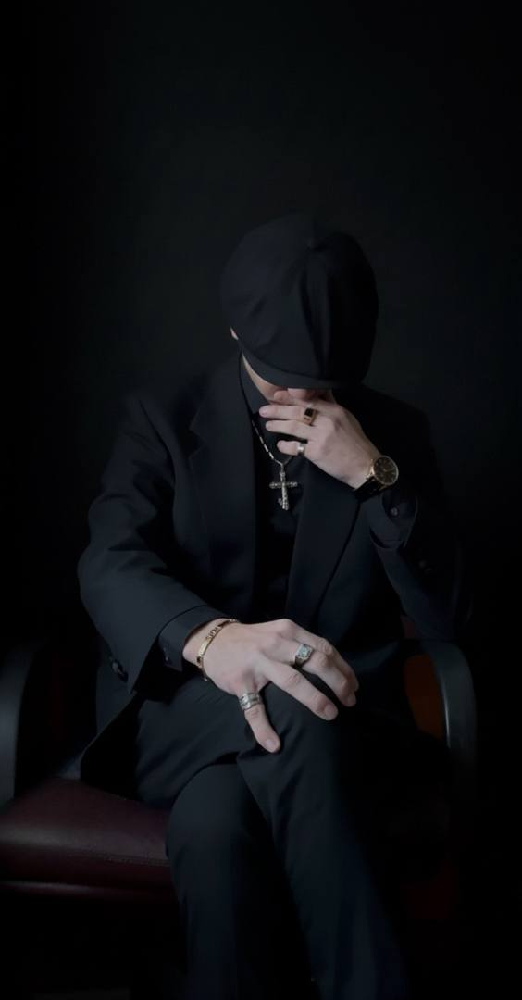
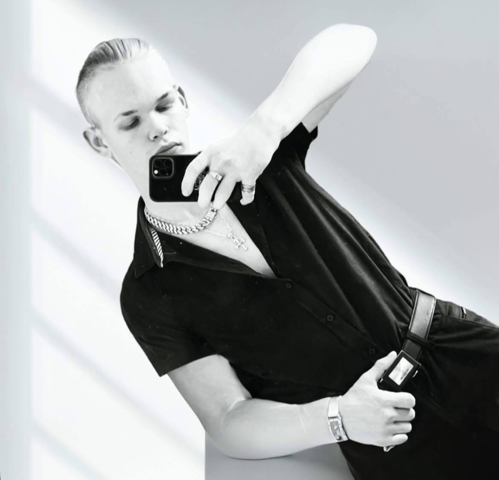
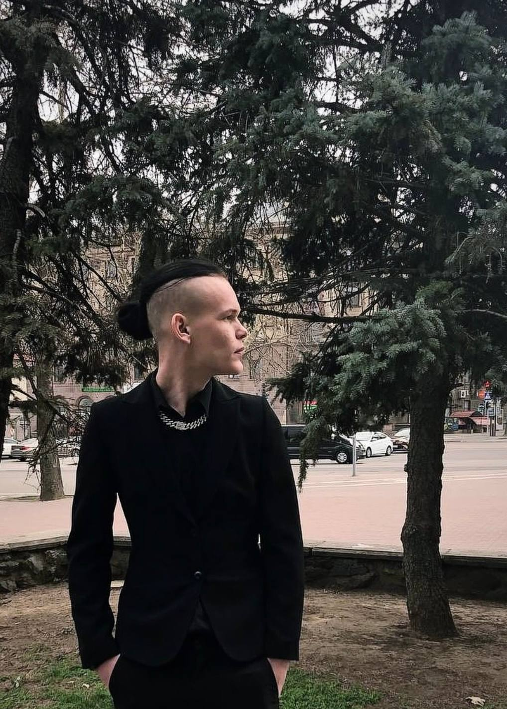
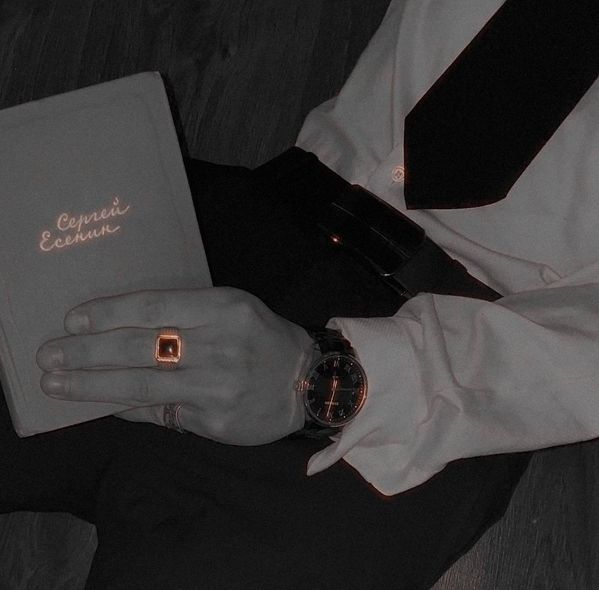

Silent.writer.official — биография поэта




silent.writer.official
(Богородиченко Ярослав Васильевич; род. 20.02.2006, Херсон, 20 лет)
Украинский поэт и автор. Пишет лирические и философские стихи, которые не оставляют равнодушными.
Творчество
• Стихи и афоризмы с философским и лирическим уклоном.
• Онлайн-публикации и работа над сборниками.
Достижения
• Стихи, участвовавшие в школьных выставках, отмечены благодарностями.
• Занимался спортом, завоевал первое место.
• Работал в полиции, получил грамоту за заслуги.
Личная жизнь
• Проживает в Одессе.
• В отношениях с Анастасией Сергеевной Плотник.